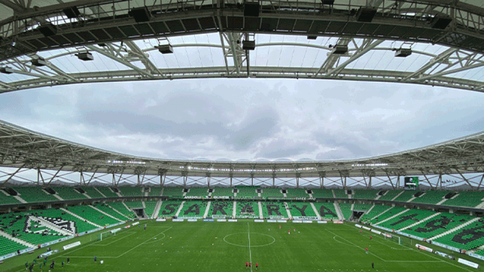
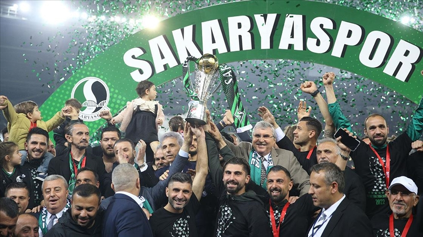

Tarihçe
Şehrin 1900'lü yılların başında başlayıp, zaman içinde olgunlaşan köklü futbol geçmişinin, bir potada harmanlandığı,
şehrin tüm farklı futbol değerlerinin güçlerini birleştirme iradesi gösterdiği 1965 yılında başlar. Dönemin gençlik ve spor bakanlığının,
oluşturmak istediği Türkiye II. Milli Futbol Ligi projesi ve bunun ile ilgili olarak şehrin önde gelenlerinin girişim yapmasını talep etmesi,
kuruluşun mihenk taşıdır.
Dönemin futbol federasyonu başkanı Orhan Şeref Apak'ın girişimleri ve o dönem Adapazarı Şekerspor kaleciliğini yapan Fikret Aldinç'in Sakarya şehrinin
futbol birikimine kefil olması ile süreç resmen başlamıştır. 10 Mayıs 1965 tarihinde Sakarya'da bulunan köklü takımlardan İdman Yurdu başkanı Av.Ali Necdet Güven, Güneşspor kulüp başkanı
Ethem Boran, Gençler Birliği kulüp başkanı Şevket Başak, Ada Genlik kulübü 2.başkanı Hamdi Uzel ve beraberindeki yöneticiler bir araya gelerek, şehrin tüm dinamiklerini ve güçlerini
tek çatı altında toplanarak, şehrin tek profesyonel takımını kurulmasına dair görüşmeleri başlatmışlardır. Sakaryaspor'un temelleri bu görüşmelerde atılmıştır. Ethem Boran'ın çalışmalara
liderlik etmesi ile kuruluş süreci hızlanmış, İdman Yurdu, Ada Gençlik, Gençler Birliği ve Güneşspor bünyesinden gelen 20 kişilik kurucu listesi, Sakaryaspor kulübünün kuruluş dilekçesini 17 Haziran
1965 yılında ilgili kurumlara sunarak, büyük fedakarlıklarla efsane'nin hikayesini yazmaya başlamışlardır.
Amblem
Güncel Amblem Sakaryaspor, 1987-2016 yılları arasında üzerinde Sakarya Köprüsü ve "S" harfini barındırır şekilde Sakarya Nehri'nden oluşan bir tarafı Yeşil, bir tarafı Siyah olan amblemi kullanmaktaydı. Fakat 2016 yılında yeni sezona başlarken Diriliş Yılı adına logosunu da değiştirmiştir. Kulüp Diriliş Yılında 1987 öncesi kullandığı eski logosunu kullanmaya başlamış ancak 2019 yılında tekrar eski güncel amblemini kullanmaya karar vermiştir.

Stadyum
Yeni Sakarya Atatürk Stadyumu Sakarya Adapazarı'nda yer alan çok amaçlı stadyum, Sakaryaspor'un iç sahadaki futbol maçlarına ev sahipliği yapmaktadır. Stadyumun tabanı bir elips şeklinde olmakla birlikte, kapasitesi Sakaryaspor resmi sitesine göre 28 bin 154 koltuktur. Toplamda 661 VIP seyirci koltuğu, 7105 UEFA Club koltuğunun yer aldığı statta 262 koltuk kapasiteli 19 loca bölümü bulunmaktadır.[3] Stad Adapazarı-Karasu yolunda, şehir merkezine merkezine yaklaşık 3 km mesafededir. Stadın açılışı 8 Ekim 2017 tarihinde Kahramanmaraşspor maçı ile gerçekleşmiştir.[4][5] Sakaryaspor Sakarya Atatürk Stadyumu´ndan Yeni Sakarya Atatürk Stadyumu'na geçmiştir. Stadın tahmini maliyeti 150 milyon Türk lirasıdır.
Taraftar
Tatangalar, 1990 yılında Sakaryaspor Altyapı oyuncuları tarafından kurulan ve adını Kurtlarla Dans filminden alan taraftar grubu. Grubun liderliğini Keçi Yılmaz yapmaktadır. Tatangalar, şehrin en büyük sivil toplum örgütüdür.[9] Yaptıkları farklı pankartları ve sloganlarıyla nam salan Tatangalar yalnız tribün faktörleriyle değil sosyal yardım kampanyalarıyla da adından sıkça söz ettirmektedir. Sakaryaspor taraftar grubu Tatangalar'ın Göztepe taraftarıyla dostluğu vardır.

Başarılar
Şampiyonluk (3) : 1980-1981, 1986-1987, 2003-2004 Play Off Şampiyonluk (2) : 1997-1998, 2005-2006 --2. Lig-- Şampiyonluk (1) : 2021-22 Play Off Şampiyonluk (1) : 2010-11 Play Off Final (3) : 2017-18, 2018-19, 2020-21 Play Off Çeyrek final (1) : 2019-20 --3. lig-- Play Off Şampiyonluk (1) : 2016-17 Play Off Final (1) : 2014-15 --Türkiye Kupası-- Şampiyon (1) : 1987-1988 Yarı final (2) : 1985-1986, 1998-1999 Çeyrek final (1) : 1982-1983 --Türkiye Süper Kupası-- Final (1) : 1988 --Cumhuriyet Kupası-- Şampiyonluk (1) : 2003-2004 İkincilik (1) : 2006-2007
